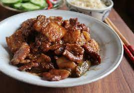

Porkbelly

Pork belly made sweet to taste
Thịt Kho Tàu is a salty-sweet dish of caramelized pork belly and marinated eggs.
Hailing from South Vietnam (as evident by the use of coconut water in cooking), this flavorful dish
is one of the most beloved amongst my friends (both Vietnamese and non-Vietnamese alike). Every
family has their own take on the dish, and this is my interpretation.
Ingredients:
- 2 1/2 lb. pork belly
- 2 tbsp.kosher salt
- 1 tbsp. distilled white vinegar
- 4 cloves garlic
- 1 shallot
- 1/2 tbsp. kosher salt
- 1.4c granulated sugar
- 1 tsp. ground black pepper
Steps:
- Place pork belly in a large Dutch oven or pot. Fill Dutch oven with enough
cool water to cover the pork belly then add the salt and vinegar. Soak for 15
minutes to start removing impurities from the meat. Drain and rinse meat of salt
and vinegar. Return pork belly to the Dutch oven.
- Pour enough fresh water to cover pork belly again. Bring to a boil, and boil
for 2 minutes. By this point, a lot of scum should come to the surface. Drain then
rinse the pork under running water until water is clear. Clean Dutch oven.
(Similar to the previous step, this is done to further remove impurities from the
meat to yield a clearer sauce. This step also makes it easier to slice the pork.)
- Cut pork into 1.5” cubes, making sure they are about the same size so they will
cook evenly together.